Nov 11, 2010 · 7 minute read · Comments
Games development
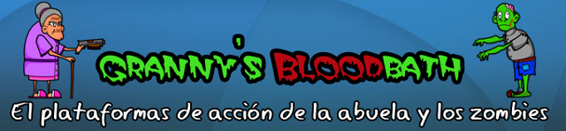
Granny’s Bloodbath fue el proyecto que desarrollamos tres compañeros para la asignatura Diseño de Videojuegos en la Universidad de Cádiz durante el segundo cuatrimestre del curso 2009-2010. Se trata de un juego open source de plataformas y acción de scroll horizontal en el que manejamos a una abuelita que trata de sobrevivir a una invasión zombie. Armada con su bastón y la escopeta de su difunto marido avanzaba por tres niveles con sus correspondientes escenas narrativas y el obligado final boss. En este articulo diseccionaré el desarrollo de Granny’s Bloodbath a modo de reflexión.
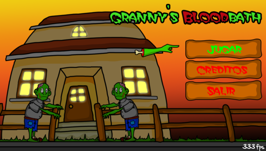
Datos técnicos
Granny’s Bloodbath está desarrollado en C++ utilizando la librería multimedia SDL, varias de sus extensiones y el parser TinyXML++. Inicialmente estaban previstas versiones para Windows y GNU/Linux aunque finalmente tratamos de portarlo a Playstation Portable. Por razones de tiempo sólo pudimos publicar una versión beta pero el resultado fue satisfactorio. Además, publiqué en Wikibooks, un artículo sobre desarrollo de juegos en PSP utilizando SDL. El grupo lo formábamos 3 proyectos de ingenieros y ningún artista (craso error).
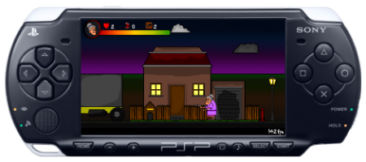
Sobre el Postmortem
Antes de entrar en faena creo que debería comentar qué es un Postmortem para que los que no hayan oído hablar del término puedan subirse al tren. Tras el lanzamiento y recepción de un videojuego suele redactarse una reflexión en la que se analiza tanto lo que salió bien durante el desarrollo como los errores cometidos por el equipo. Se tocan temas de diseño, gestión de poyectos, programación etc. No es que me esté dando delirios de grandeza, simplemente escribo esto para reflexionar sobre mi experiencia con Granny’s Bloodbath y si a alguien le sirve de algo, mucho mejor
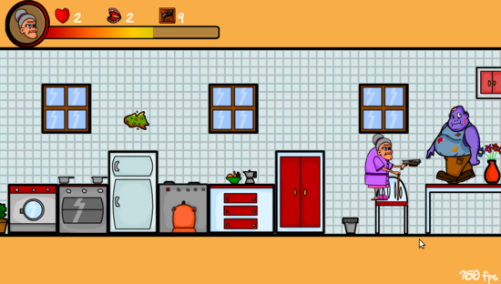
Lo que salió bien
Planificación inicial
Desde el principio supimos que debíamos acotar las dimensiones del proyecto a nuestras circunstancias: 3 meses de desarrollo y muchas más asignaturas a las que atender. Nos decantamos por la biblioteca SDL y teníamos un largo trecho por delante para crear una capa por encima orientada a objetos que nos facilitase la vida. Partiendo de esa base confeccionamos una planificación utilizando Planner y redactamos un GDD (Game Design Document) tosco pero muy fácil de comprender.
Definir exactamente lo que estaba dentro y fuera del proyecto fue un punto fundamental para el “éxito”. Fue complicado conocer de antemano las mecánicas que debíamos implementar y los recursos artísticos necesarios pero más tarde nos ayudó más de lo que pensábamos. Hubo consenso en el equipo, durante todo el desarrollo permanecimos en el mismo barco y respetamos el acuerdo inicial. Ahora acudo al documento de diseño y me parece tremendamente pobre pero, sin lugar a dudas, era mejor eso que nada. Lo tenéis [aquí por si os interesa.
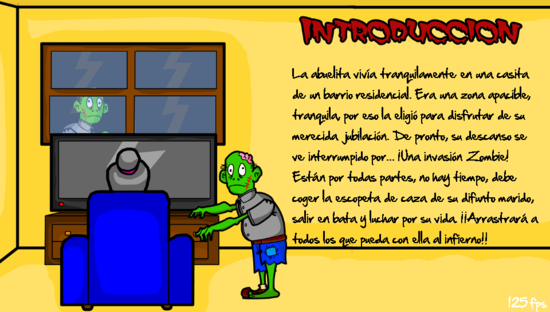
Disfrutamos mucho
No estábamos trabajando en Granny’s Bloodbath por trabajo y los requisitos para aprobar la asignatura estaban por debajo del resultado obtenido. Entonces, ¿por qué trabajamos tan duro? El desarrollo de videojuegos nos gustaba a los tres miembros del equipo y estábamos deseosos de aprender (aunque el entusiasmo no estuviera repartido de forma equitativa). Escogimos una idea muy divertida y creemos que original, aunque ahora haya juegos, series y películas de zombies hasta debajo de las piedras.
El hecho de disfrutar de lo que hicimos fue clave para la consecución del proyecto. Parece una idea obvia pero no lo es tanto. Mantener la moral del equipo alta incluso en los momentos más estresantes del desarrollo no es tarea fácil. ¡No penséis que fui el jefe del equipo! Nuestra jerarquía era completamente horizontal y nos apoyamos los unos a los otros.
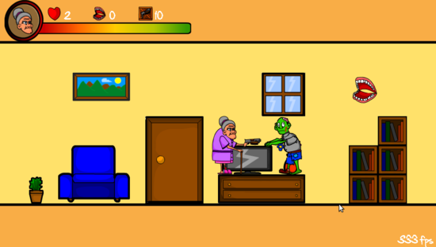
Motor modular y separado de los datos
SDL es una biblioteca muy sencilla pero compatible con gran cantidad de plataformas sin tocar casi ninguna línea de código. La pega es que es de muy bajo nivel. Por comodidad tuvimos que crear capas de abstracción superiores conformando un motor orientado a objetos y, a riesgo de perder modestia, diría que no hicimos un mal trabajo. Entre otros, creamos un módulo de gestión de recursos multimedia que funcionaba realmente bien. Esto nos permitía no duplicar recursos y utilizar lo estrictamente necesario en un momento dado. Tuvimos que adaptar el motor a PSP y fue muy sencillo, se cambió la implementación de la gestión de entrada sin afectar al resto del código.
Hicimos un uso extensivo del formato XML para separar del código fuente todos los datos: atributos de los personajes, cajas de colisión, animaciones, niveles, escenas narrativas e incluso el guión del juego. Esto nos permite modificar una gran cantidad de parámetros sin tener que recompilar todo el proyecto. Ajustar velocidades, modificar posiciones de enemigos o cambiar el orden de los niveles era muy sencillo y cualquiera podría hacerlo sin conocimientos de programación. No desarrollamos herramientas de diseño ya que se salía completamente de las dimensiones del proyecto.
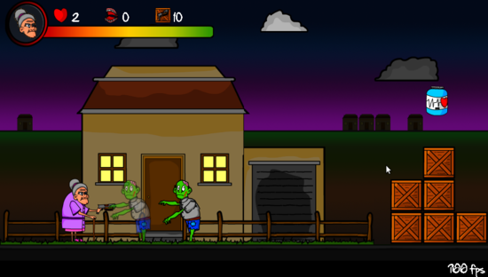
Testeo
Como todos sabréis hacer pruebas de forma exhaustiva es primordial para desarrollar software de calidad. En esta ocasión no me refiero a pruebas unitarias o de integración sino de jugabilidad. En un juego es imprescindible pulir las mecánicas para obtener la mayor diversión posible porque de eso es lo que se trata. Todo debe ser intuitivo y directo, nada de controles confusos o mecánicas que distraigan al usuario. Los desarrolladores acabamos demasiado implicados y no podemos aportar una visión objetiva del conjunto, se necesita gente de fuera.
A medida que avanzaba el desarrollo engañamos a familiares y amigos para que echaran una partida a Granny’s Bloodbath. Incluso tuvimos una pequeña presencia en alguna red social. Gracias a eso pudimos recibir feedback, detectar a tiempo fallos de conceptos y conseguir una versión final más depurada.
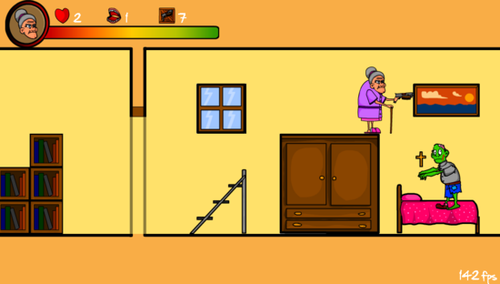
Lo que salió mal
Problemas de diseño
A pesar de las pruebas, cometimos ciertos fallos de diseño bastante graves. El scroll horizontal daba muy poco margen al jugador para anticipar los movimientos de los enemigos. Éstos aparecían en nuestras narices y era muy complicado hacerles frente. Por otra parte, los elementos sobre los que podías saltar (coches, muebles, cajas, etc ) no contrastaban en absoluto con el resto del escenario. El jugador podía confundirse y no aprovechar todas las posibilidades.
Como he mencionado antes, es indispensable que el jugador se haga rápidamente con los controles y la mecánica le resulte natural y cómoda. Desde luego, es uno de los apartados más difíciles de aprender. Trataremos de aplicarnos el cuento para la próxima vez.
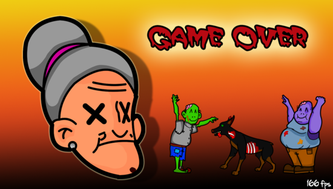
Distintas expectativas
Es cierto que los tres componentes del equipo queríamos aprender y compartíamos la misma visión del juego. No obstante, no hubo una dedicación (en términos de tiempo) equitativa en el equipo. Supongo que no fue problema de organización, ni de motivación. Creo que este tipo de problemas vienen de serie cuando trabajas en un proyecto tan pequeño, sin repercusión alguna ni un trabajo de por medio. Cada uno invierte en él lo que quiere o puede.
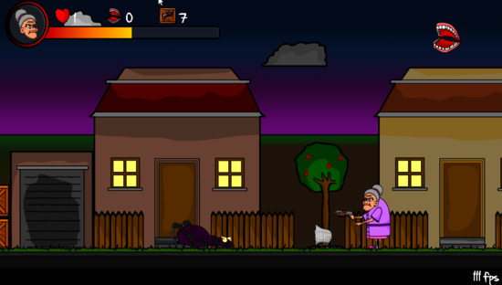
No externalizar el trabajo artístico
No somos artistas 2D ni muchísimo menos aunque decidimos encargarnos nosotros mismos de los sprites, niveles y GUI (el sonido lo obtuvimos de Jamendo y otros bancos libres). Esto nos retrasó muchísimo y nos restó ingentes cantidades de tiempo y fuerzas. El trabajo gráfico fue mucho más grande de lo que pudimos prever. Otros compañeros de la asignatura consiguieron colaboraciones externas para el plano artístico. ¡Mi intención no es criticarlos! Fueron más inteligentes y se centraron en lo que mejor sabían hacer.
Sin duda, deberíamos haber buscado activamente colaboradores. Quizás sea una de las lecciones más valiosas aprendidas durante el desarrollo de Granny’s Bloodbath (al menos en lo que a mí respecta). No existe un concepto más básico: los desarrolladores no podemos trabajar solos, necesitamos muchos artistas.
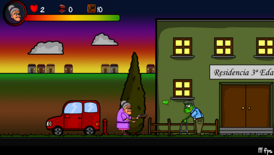
Conclusiones
¡Oh, veo que has aguantado este artículo tan extenso como un campeón! Uhmm… quizás hayas hecho scroll hasta aquí abajo para ir directamente a las conclusiones. Granny’s Bloodbath era el proyecto más grande al que nos habíamos enfrentado hasta el momento y aprendimos muchísimo. Creo que no es descabellado decir que no salió mal teniendo en cuenta los recursos (tiempo, equipo y conocimientos) con los que contábamos. Espero que este artículo me ayude a recordar nuestras equivocaciones y tenerlas siempre presentes para que no se vuelvan a repetir.
Nov 10, 2010 · 2 minute read · Comments
Games development
Cuando hace unos días escribía un artículo presentando a la Asociación de Desarrollo de Videojuegos de la Universidad de Cádiz (ADVUCA) comentaba que estábamos preparando nuestra primera actividad. El taller: “Introducción al desarrollo de videojuegos con un Pong” va viento en popa y se celebrará los días 22 y 25 de noviembre de 17:00 a 20:00 en la Escuela Superior de Ingeniería de Cádiz. Lo impartimos principalmente Alberto Cejas y yo aunque contaremos con el apoyo de varios compañeros más.
Como habréis podido imaginar pretendemos abordar los conceptos básicos del desarrollo de videojuegos de forma sencilla y práctica. La idea es que cada asistente salga del taller con una versión del clásico Pong programada por él mismo bajo el brazo. Utilizaremos el lenguaje de programación C (el que primero se aprende en Cádiz) y la biblioteca SDL. No será algo a lo loco, pasaremos por todas las fases: planificación, diseño, implementación paso a paso… Como reza nuestro cartel sólo se necesita “C y muchas ganas”. Creo que es una idea ambiciosa pero nos conformamos con que los asistentes acaben lo suficientemente motivados como para seguir aprendiendo de forma individual.
El haber pegado carteles por la facultad ha hecho subir las inscripciones como la espuma y estamos muy ilusionados con el proyecto. No podemos olvidar el apoyo de la Oficina de Software Libre (OSLUCA) el cual está siendo inestimable ya que, hasta el momento, tenemos poca experiencia en organizar este tipo de actividades. Estos días seguiremos trabajando duro en ultimar los detalles aunque sea inevitable que aparezcan imprevistos a la hora de la verdad.
¡Os mantendremos informados! Mientras tanto os dejo el cartel, podéis hacer click para verlo ampliado.
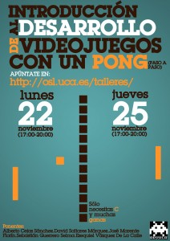
Nov 7, 2010 · 2 minute read · Comments
Hobbies

Los ojos de Julia se ha enfrentado a las obligadas comparaciones con el anterior largometraje de terror protagonizada por Belén Rueda, El orfanato. Ya saben, aquello de “la anterior era mucho mejor…". Bah, pamplinas y lo dice alguien a quien le gustó mucho El orfanato. Hacía tiempo que todos los presentes de la sala se estremecían al unísono. Incluso algunos graciosos trataban de paliar su estrés soltando alguna ridícula burla en todo un alarde de testosterona. A continuación, unas breves impresiones.
Julia sufre una enfermedad degenerativa en la vista mientras que su hermana gemela ya se había quedado completamente ciega. Cuando ésta aparece colgada de una soga en el sótano de su casa Julia es la única que, irónicamente, ve más allá y piensa que su hermana no se ha suicidado. Entonces es cuando inicia una búsqueda solitaria por la oscuridad con el fin de aclarar la bruma que envuelve a la muerte de su hermana.
Los ojos de Julia nos pone en la piel de alguien que no ve en absoluto pero puede percibir una amenaza constante que otros no pueden ver. Funciona porque recurre al miedo más básico, el miedo a la oscuridad. No el tipo de oscuridad que se esfuma cuando encendemos la luz, hablamos de negrura permanente. Es posible que algo horrible esté ocurriendo a nuestro alrededor mientras sólo podemos imaginar. La mente nos juega malas pasadas, creemos que hay algo cuando en realidad no lo hay o viceversa.
Estamos ante un largometraje de tensión y sensaciones por el que merece la pena dejarse unos pocos euros. Sin lugar a dudas me ha dejado impresionado y puede que por ello me haya excedido ligeramente. Por favor, guarden el lanzamiento de tomates para los comentarios.
Nov 6, 2010 · 4 minute read · Comments
Computing

Llevo bastante tiempo utilizando Spotify en Linux a través de Wine y últimamente me estaba dando más disgustos que alegrías por problemas relacionados con el sonido. Raudo y veloz acudí a su alternativa más evidente, Grooveshark. En este artículo comentaré mi experiencia con ambos servicios de música por streaming de forma que puedan decidirse por alguno de los dos en caso de duda.
La aplicación
Spotify cuenta con clientes de escritorio compatibles con Windows y Mac. Hace poco tiempo han lanzado una beta del cliente para GNU/Linux pero sólo está disponible si eres usuario Premium. Como ya he mencionado, he estado utilizando la versión para Windows a través de Wine. El sistema es rápido y bastante intuitivo, buscar canciones es sencillo. Podemos guardar listas de reproducción, compartirlas y acceder a las búsquedas recientes. Desconozco su funcionamiento en Mac, en Windows funciona sin problemas y bajo wine falla mucho el sonido (aunque es posible que sea de mi tarjeta).

Grooveshark, en cambio, es una aplicación web escrita en ActionScript y Java lo que lo hace bastante más pesado que Spotify. Como ventaja, es compatible con todos los sistemas operativos en los que funcionen estos dos lenguajes de programación (prácticamente todos). En el fondo su interfaz es muy similar a la de Spotify, en este apartado andan a la par.

Catálogo de música
Spotify llega a acuerdos con las discográficas para poder distribuir sus canciones a través de su servicio. El catálogo es tremendamente amplio pero existen ausencias imperdonables como Led Zeppelin, AC/DC o The Beatles. A su favor hay que reconocer que la música está muy bien indexada, no hay duplicidades y sus metadatos (autor, álbum, año, etc) siempre son correctos. Navegar por los contenidos se hace muy cómodo
Por su parte, Grooveshark se vale de las canciones que suben los usuarios. La oferta es más rica aunque la catalogación es, en demasiados casos, deficiente. Si el usuario que sube la música comete errores en los metadatos, éstos permanecerán una vez las canciones se encuentren flotando en la nube. Si nos curramos listas de reproducción limpias o utilizamos las de nuestros amigos de confianza no tendremos problemas. No obstante, no es tan directo y elegante como en Spotify.

Vertiente social
Hoy en día si las aplicaciones no están conectadas con el “Feisbuk” no son nada y en esta ocasión no podía ser menos. Spotify nos ofrece conectarnos con nuestros amigos de la gran red social que usen el servicio. Esto nos permite acceder a sus listas de reproducción y descubrir grupos nuevos cada día. ¡También podemos comprobar si nuestro amigote “el duro” escucha Hannah Montana en secreto! El sistema está muy integrado en la aplicación y funciona de maravilla.
En Grooveshark podemos tener amigos pero son exclusivos de la aplicación, no podemos “importarlos” del exterior. Tenemos acceso a sus listas, canciones preferidas etc. La novedad de Grooveshark es que podemos escuchar “radios”, listas de reproducción que se componen de forma inteligente a través de un motor de recomendaciones que sigue las canciones que nos gusten.

Cuentas Premium
En Spotify tendremos que soportar horribles anuncios de vez en cuando a menos que pasemos por caja. Por 5€ al mes tenemos música ilimitada sin anuncios y por 10€ al mes podremos escuchar listas de reproducción offline y utilizar los clientes para plataformas móviles (Android, iPhone, Windows Phone y Symbian). No he utilizado ningún servicio de pago porque con la cuenta gratuita voy “sobrado” pero hay que reconocer que los precios no son desorbitados.
Grooveshark es más permisivo al respecto porque ¡no tiene anuncios sonoros! No tener interrupciones en la reproducción es de agradecer (en la interfaz sí tiene anuncios). Eso sí, podemos pagar 3€ al mes para utilizar los clientes móviles (Android y Blackberry) y disponer de ventajas como personalización de la interfaz y otras pijadas inmensas.

Conclusiones
Spotify ofrece un catálogo más controlado y ordenado mientras que Grooveshark no inserta anuncios en la reproducción de nuestras listas. Eso, junto con la amplia gama de música y su carácter completamente multiplataforma hace que haya elegido como servicio de música por streaming a Grooveshark.
¿Alguien prefiere Spotify? En tal caso le animo a que nos exponga sus razones.
Nov 4, 2010 · 2 minute read · Comments
Games development

Cuando entré en la carrera se estaba constituyendo la Asociación de Desarrollo de Videojuegos de la Universidad de Cádiz (ADVUCA). Como os podéis imaginar, era un tema que me interesaba muchísimo y asistí emocionado al taller que organizaron sobre desarrollo en Nintendo DS con PAlibs. Este fue uno de mis primeros pasos en la programación de juegos. Desgraciadamente, la asociación nunca llegó a formalizarse y quedó en el olvido. ¡Este año unos compañeros nos hemos animado para alcanzar el resurgir de la ADVUCA!
¿Quiénes somos?
Aún no hemos recibido el beneplácito de la administración pública pero estamos trabajando duro y con mucha ilusión para organizar actividades en la Universidad. Actualmente, la Junta Directiva la formamos:
- Presidente: David Saltares Márquez (¡ese soy yo!)
- Vicepresidente: Jose Marente Florín
- Secretario: Sebastián Guerrero Selma
- Tesorero: Alberto Cejas Sánchez
- Vocal: Javier Santacruz López-Cepero
Hasta que no tengamos respuesta del Registro de Asociaciones no podremos abrir la veda a inscripciones pero estamos deseando poder recibir socios. ### Objetivos
Como se podrá leer en nuestros estatutos nuestros principales objetivos son:
- Promover la creación de grupos de desarrollo de videojuegos interdisciplinares (diseñadores, programadores, artistas…).
- Generar y compartir documentación sobre desarrollo de videojuegos.
- Introducción y profundización en la programación a través de los videojuegos.
- Colaboración con profesores de las asignaturas de la carrera.
- Investigar y promover nuevas formas de ocio electrónico.
- (…) y muchos más.
No somos grandes expertos pero tenemos muchas ganas de crear una comunidad activa en el desarrollo de videojuegos dentro (y fuera) de nuestra Universidad. Por supuesto, seguiremos aprendiendo porque nos queda un larguísimo camino que recorrer.
Próximamente
Próximamente comentaré más novedades como el taller que estamos organizando y la página web actualmente en construcción. Mientras tanto, podéis seguirnos por Twitter en @advuca. Hala, con este grandioso “cliffhanger” termino por hoy y me despido.